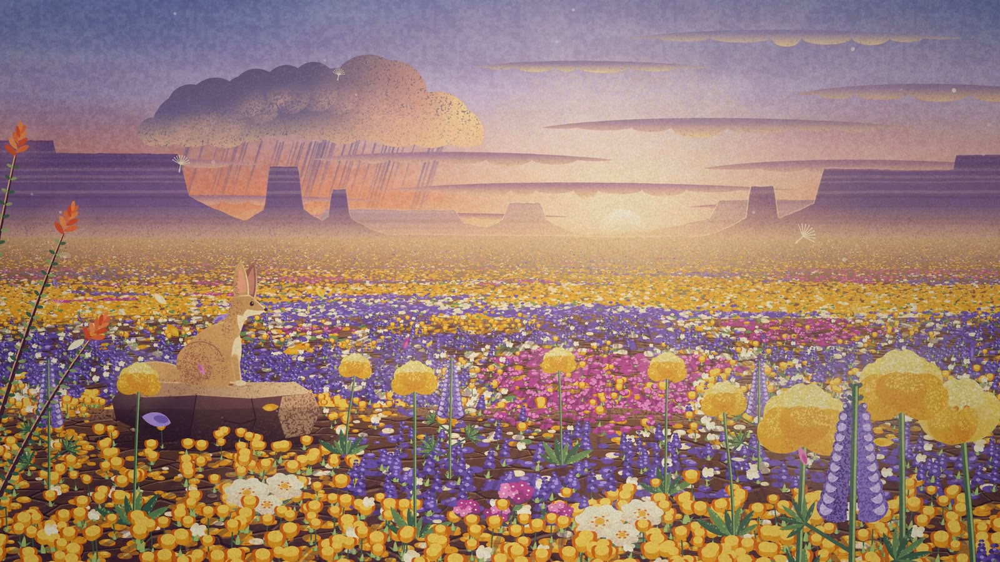

Siete skills.
Videos terminados.
Claude diseña la imagen, la anima, compone la música y los efectos, revisa su propio trabajo y entrega un MP4 a 30 fps en 4K (2K si la máquina no da para 4K).

title-sequenceCabeceras, intros de canal, reels y cortinillas, con música propia.

editorial-collage-explainerCollage de papel con mapas y datos reales, para una narración.

parallax-landscape-animationProfundidad, cámara dirigida, algo que crece y música compuesta.

character-explainer-animationPersonajes en un mundo ilustrado, sincronizados con la narración.
action-scene-3dPeleas, duelos y persecuciones en 3D, a partir de una lámina por personaje.
product-spotAnuncios de 6 a 30 s, con una versión vertical recompuesta para redes.
video-directorRecibe un pedido suelto, elige la skill, escribe el brief y arma la entrega.
Fotogramas reales de las demos 01–04, hechas con estas skills. Producto independiente: no es de Anthropic ni está respaldado por Anthropic.